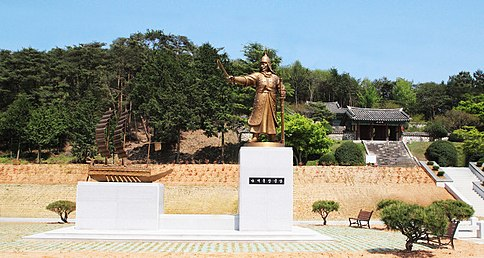

The War Memorial of Korea is located in Yongsan-dong, Yongsan-gu, Seoul, South Korea. There are six indoor exhibition rooms and an outdoor exhibition center. The six indoor exhibition rooms are named "Room of Respect to Defense of Nation", "Room of War History", "Room of the Korean War", "Room of the Dispatch of Foreign Forces", "Room of the Development of Armed Forces", and "Room of the Fully-Equipped Warship." In the outdoor exhibition, there are large-sized weaponry. The model of the Turtle Ship and documents alluding to Na Dae-yong are in the Joseon Dynasty section in the Room of War History.
The Sochungsa memorial was erected to extol Nadaeyong’s patriotism and endeavors to reinforce the combat capabilities of the navy. The Sochungsa consists of a model of the Turtle Ship and a cenotaph of Na Dae-yong. It was built in 1977, and Na's achievements are celebrated every April 21. 
Na Dae-yong’s house is located on Moonpyeong-myeon, Naju City. It is a north-headed house of four-by-one size. His burial ground is located in the base of the mountain, which is about 3 km away from Nadaeyong’s house. It is named as the 26th remembrance of Jeollanam-do.